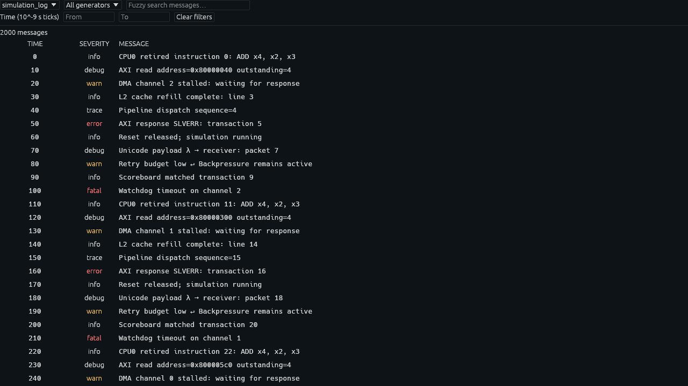
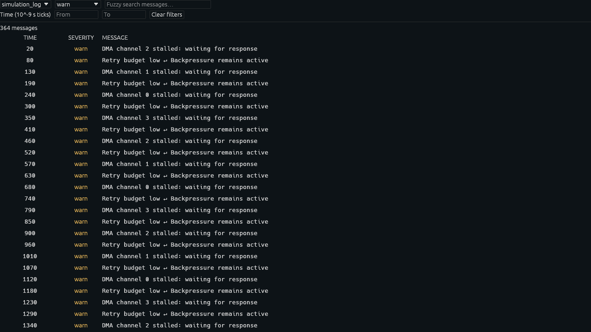

Document resource
Recording A
The native VTR reader and immutable log index belong to the recording. Multiple log tiles share the same index.
Inside Surfer · Simulation logs
A warning can explain a waveform in one sentence. Browse the messages recorded alongside your signals, narrow them to a generator or a time interval, and move the waveform cursor directly to the event.
Open simulation_logs.vtr, then choose New tile → simulation_logs from a tile tab menu. Alternatively, right-click a log stream or generator in the transaction browser and choose Open simulation logs. Each opening creates an independent tile, so two severity generators can stay visible side by side.
Choose a stream, then All generators or one generator. Verilator records a single simulation_log stream with trace, debug, info, warn, error and fatal generators. Ordinary display and file-output tasks use info; warning, error and fatal tasks retain their severity. Generators without records remain available. This tile is separate from the existing Logs tile, which displays Surfer’s own diagnostics.

| Control | Behavior |
|---|---|
| Fuzzy search | Case-insensitive subsequence matching of message text. Matches remain in timestamp order, with transaction identity breaking ties. |
| From / To | Inclusive unsigned timestamps in recording ticks. Empty bounds mean the beginning or end. The displayed exponent gives the tick duration. |
| Click a timestamp | Set the shared waveform cursor. It does not automatically change waveform zoom. |
| Scroll | Move through results vertically; scroll horizontally for long messages. |
| Hover / right-click a message | Read its full text, including newlines, or copy the original message. |
| Clear filters | Keep the stream and reset the generator, search and time bounds. |
Rows keep a fixed height. Embedded newlines appear as ↵ in the table, preserving predictable scrolling; hover and copy retain the complete message.
Document resource
The native VTR reader and immutable log index belong to the recording. Multiple log tiles share the same index.
Saved tile state
Stream, generator, fuzzy text and time bounds are serialized with the tile.
Disposable runtime
A worker receiver, cancellation token and matching row indices belong to each tile. They are rebuilt after restoring or cloning.
The first visible log tile asks a worker to decode and format the recording’s log messages. The worker builds a timestamp-sorted index once. This initial scan includes all log streams; memory therefore grows with the full log text. It never runs in the render thread. The existing reader’s temporary decoded blocks are released after the index is built.
The index stays available for the recording’s lifetime. A filter result holds positions in this shared index, rather than copying messages. Closing a tile cancels its query. Replacing the recording clears the tile’s old result; a worker holding recording A cannot publish into a tile now showing recording B. Saved numeric stream and generator identities are validated against the current recording’s available choices.
A time query first locates its two boundaries with binary search. A worker checks only that interval for stream, generator and fuzzy matches. The table then asks for just the visible row range. Formatting labels, laying out text and generating draw shapes are proportional to those visible rows, rather than to the total result count.
While a query runs, the tile shows “Searching simulation logs…”. Changing any filter cancels the previous scan. Each tile runs at most one query at a time and starts the latest request when the old job stops. Cancellation is checked between records. An initial shared index build completes even if its first tile closes; another tile can reuse it.
This teaching model illustrates worker ownership; it is not the application’s search engine.

The initial implementation is native-only and reads local VTR log records. Ordinary transaction streams are not interpreted as arbitrary log messages. There is no live tailing, regular-expression search, message editing or multi-stream merge. Streams remain separate; all generators within one stream can be merged. Source text is already formatted by Verilator before it enters VTR, preserving SystemVerilog formatting.
A reproducible test generates 1,010,000 messages and checks that only 27 rows are laid out in a 1280 × 720 frame. The final local measurement was about 0.20 ms per CPU UI frame for both the 2,020-record and million-record inputs. A full fuzzy scan took about 163 ms in a worker. These are development-profile CPU measurements on this machine, not GPU frame-rate guarantees, disk-cold timings or memory bounds. The benchmark prints index/open time, search time and maximum frame time during search separately.
The index retains formatted text for every record and sorted row metadata; each tile also retains indices for its matches. This trades memory for repeat-query and scrolling speed. Very large individual messages still cost work when visible. The shared reader lock serializes the initial index build with other background VTR reads; this does not place decoding in the UI thread.
Verilator records messages while the VTR trace is open. Open the trace before evaluation and advance the simulation context’s time before evaluating the model. Passing a timestamp only to the later waveform dump cannot timestamp a message that was already emitted. Runtime printing helpers also record diagnostics and output such as $printtimescale. Non-UTF-8 messages are represented by a hexadecimal byte string prefixed with [non-UTF-8 bytes], preserving their data. Compile-time diagnostics and arbitrary C++ stdout are outside the HDL reporting-task capture path. Console and file output remain available.